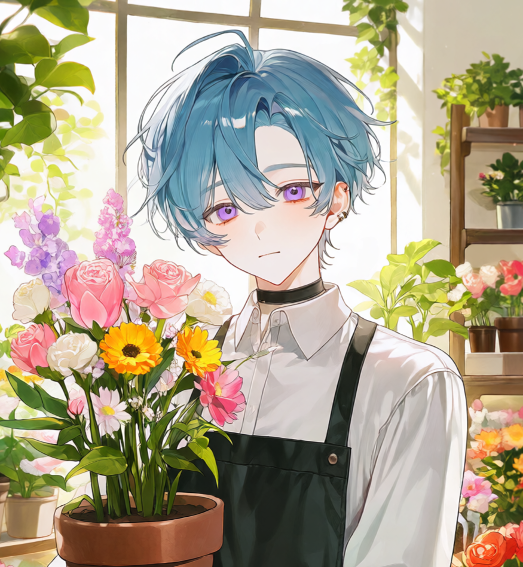
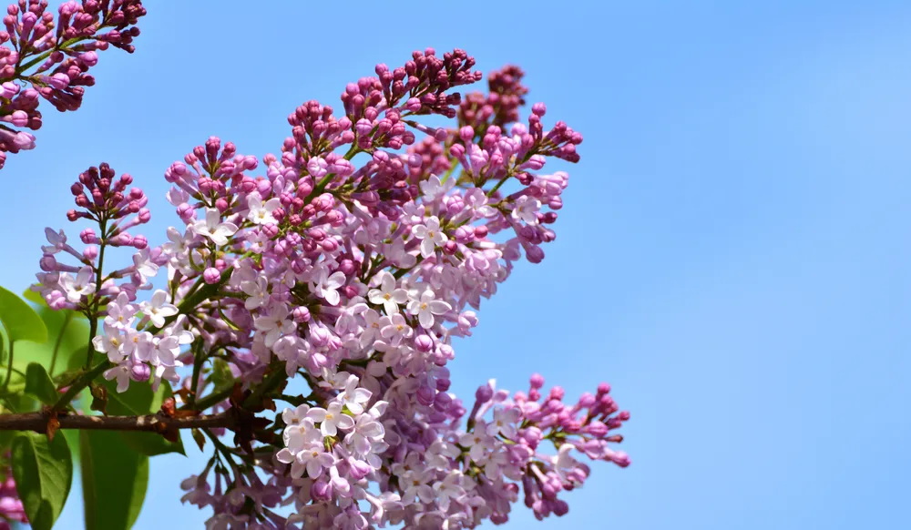
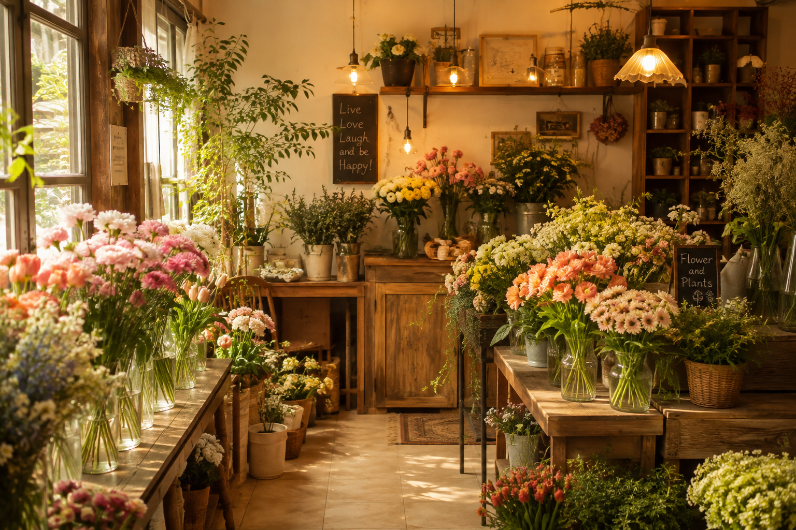
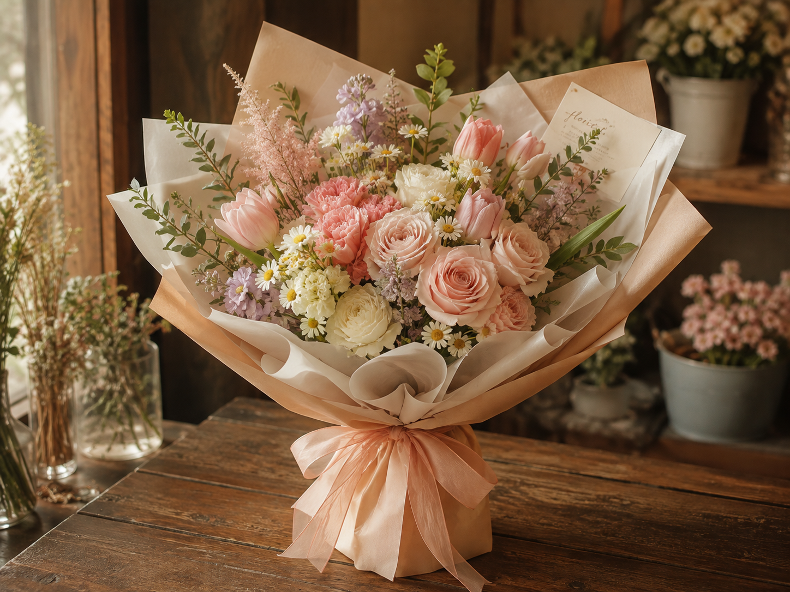
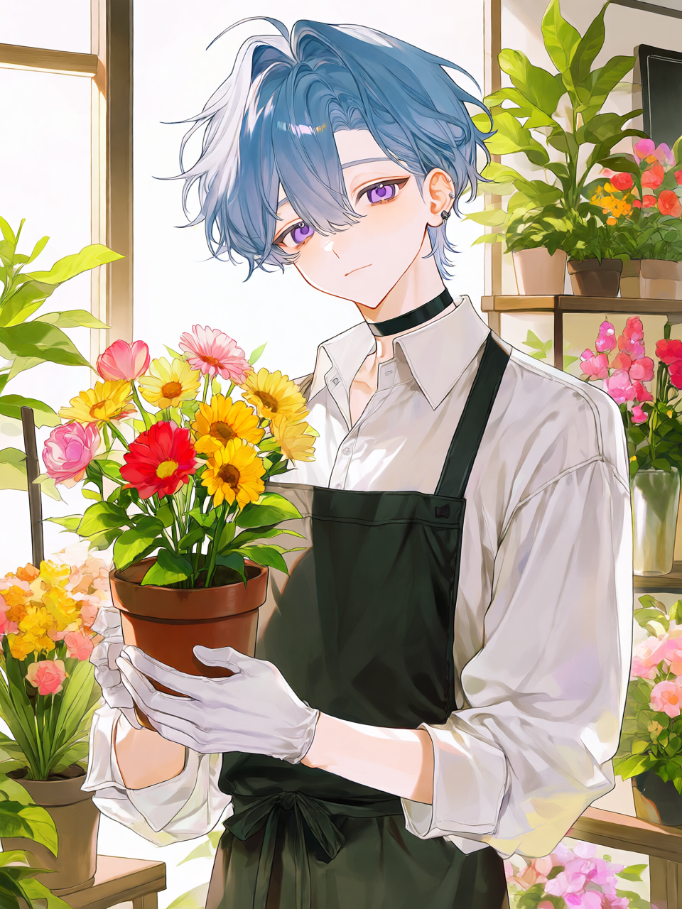

백화진
38세
남성
09.14
174cm · 57kg
플로리스트
꽃이 오는 날 대표
꽃을 고르고, 다듬고,
누군가에게 건네는 사람.
백화진은 작은 꽃집을 운영하며
계절마다 다른 꽃의 아름다움을
기록하고 있습니다.

"첫사랑 · 젊은 날의 추억"
백화진이 가장 좋아하는 꽃.
화려하게 눈에 띄기보다
오래 바라볼수록 아름다운 꽃을 좋아한다.
父 우준현, 母 백현서, (故)배우자 정윤서
꽃꽂이, 식물 관리, 수면
꽃다발 제작
겨울
꽃의 상태를 확인하는 것
계절별 꽃말을 외우고 있다. 결벽증이 심하다.

꽃이 필요한 날보다,
꽃을 보고 싶은 날에 찾아오는 곳.
생화와 화분,
주문 제작 꽃다발을 판매합니다.
09:00 - 20:00
녹월동


2026.08.08
오늘은 평소보다 조금 늦게
꽃시장에 도착했다.
하지만 늦은 시간에도
예쁘게 피어있는 꽃들이 있었다.
꽃은 언제나 자신의 속도로
피어난다는 것을 다시 배웠다.
― 백화진